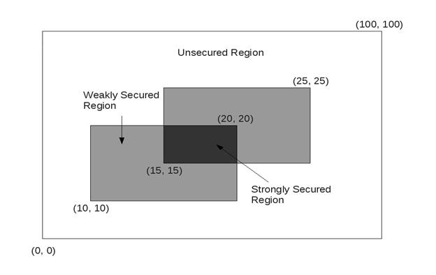

Problem D
Guard the Land
Input: Standard Input
Output: Standard Output
Farmer Latif has a rectangular shaped land of 100 meter width and 100 meter height. Any point in this land can be defined as (x, y) where x is the distance of the point from left side of the land and y is the distance of the point from bottom side. So lower left corner of the land is (0, 0) and upper right corner of the land is (100, 100).
Every night Latif hires two guards to guard his crop in the land. A guard can guard a rectangular shaped region. Any guard has some limitation of area to guard. The guard might not be able to guard the whole land. So every night Latif defines two rectangular regions for two guards to be guarded by them. The sides of this rectangular region are parallel to the sides of the Latif’s land. He defines the region for guards by four integers x1, y1, x2, y2. Here (x1, y1) is the lower left corner of the region and (x2, y2) is the upper right corner of the region.
The region which is guarded by two guards is considered strongly secured, the region which is guarded by exactly one guard is weakly secured, and the region which is guarded by no guard is unsecured.
In this problem, you have to find the area of strongly secured region, weakly secured region and unsecured region in for every night.
Input will start with a line having a positive integer N(), the number of nights Latif hires guards. For each of the N nights, there are two lines in input, first one defines the region of first guard and the second one defines the region of second guard. Each of this line will contain four integers x1, y1, x2, y2 ().
For each land you have to output one line, giving the night number followed by three integers: Area of strongly secured region, area of weakly secured region and area of unsecured region of Latif’s land. See sample output for exact format.
|
2 10 10 20 20 15 15 25 25 10 10 20 20 20 20 30 30 |
Night 1: 25 150 9825 Night 2: 0 200 9800 |
The picture above depicts the first sample input